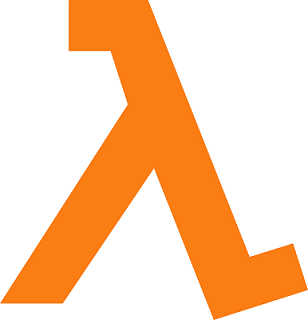

Welcome!!

My name is Corey Sobel and I'm currently a Junior at Carnegie Mellon University majoring in Computer Science with additional minors in Physics and Mathematical Sciences.
You can find descriptions of my relevant courses and sample class projects in the Course Work page. To see some of the projects I've worked on outside of class (either for clubs, research, or just for fun) please refer to the Side Projects page.
This site is heavily under construction and will be updated over time. If you have any questions, or would like to learn more about anything mentioned on the site, feel free to reach out to me.